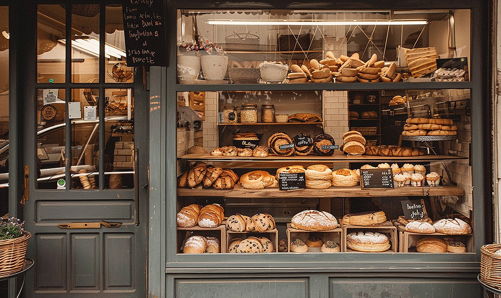

About North Star Bakery
Our Story

North Star Bakery began as a weekend sourdough stand at the local farmers’ market. Neighbors kept coming back, and soon a small storefront on Maple Street became our home. Today we still bake in small batches, still shape our loaves by hand, and still know many of our customers by name.
Our Sourcing Philosophy
Good bread starts with good ingredients. We buy flour from regional mills, eggs and dairy from nearby farms, and seasonal fruit from local growers whenever we can. Shorter trips from farm to oven mean fresher flavor and stronger community ties.
- Regional, stone-milled flours
- Local eggs, butter, and milk
- Seasonal fruit from neighborhood growers
- No artificial preservatives
Meet Our Team
Maria Alvarez, Head Baker
Maria wakes up at 3:30 a.m. to start the sourdough and has been perfecting our Signature Loaf for over ten years.
Daniel Brooks, Pastry Chef
Daniel designs our seasonal pastries and custom celebration cakes.
Priya Nair, Front of House
Priya greets every customer, handles pre-orders, and keeps the neighborhood connected.
Stop by or get in touch – we would love to meet you.